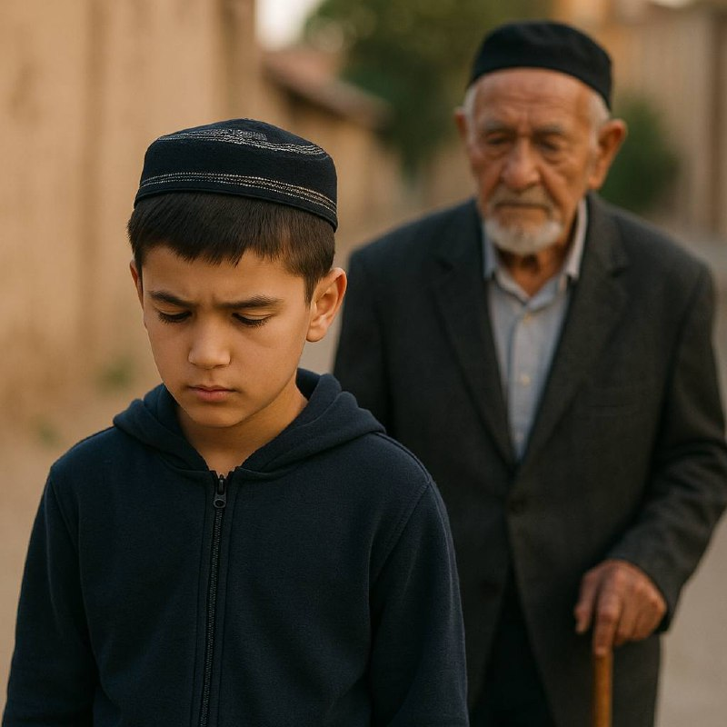

Ўғил бола тарбияси

Тартиб-интизом ва катталарга ҳурмат — ўғил болалар ҳаётидаги энг муҳим фазилатлар
Бекорчилик — илмнинг душмани, нафснинг энг яқин дўсти. Бекорчилик — виждонсизликнинг белгиси. Кимки вақтни беҳуда ўтказса, у нафс қуллигига йўл олади.
Ҳақиқий ўғил бола виждонининг овозини эшитар экан, албатта, ўзини фойдали меҳнатга бағишлайди. Чунки меҳнат — ақлни ўткирлайди, қалбни поклайди, ҳаётга қувват бағишлайди.
1. Ҳар кунингизда режа бўлсин. Бир соат ҳам бекор қолманг.
2. Катталарга ҳурмат — ўзингизнинг обрўнгизни асрашдир. Ҳурматингиз ортидан барака келади.
3. Ўзингизга масъулият юкланг. Масъулиятсиз йигит эртага оила ва жамиятга ҳам фойда беролмайди.
4. Илм, касб ва ҳунарга вақт ажратинг. Бу нафақат молиявий мустақиллик, балки қалбдаги тинчликнинг ҳам калитидир.
Бекорчилик — йўқотиш;
меҳнат ва тартиб — ютуқ. Вақтингизни муҳофаза қилинг, катталарга ҳурмат қилинг, ўзингизнинг эртангизни шундай қурингки, сизга қараб бошқалар ҳам тартиб ва виждон ўргансин.
Қонун ва қоидалар киритмасдан катта қилинган фарзанд боқиманда бўлиб ўсади.
Катталарга итоат қила олган ўғил бола эртага натижага ҳам итоат қила олади. Маҳсулдор, натижадор ва тайинли бўлади!